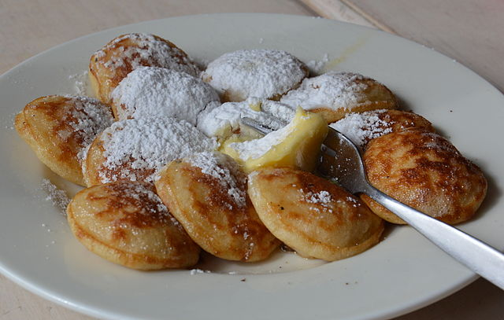

Poffertjes

Description
An easy, no-yeast recipe for Dutch pancakes, which are called "poffertjes"
in the Netherlands. They are traditionally made in a poffertjes pan which
has indents, but you can use a large frying pan and scoop a small
tablespoon of batter per poffertje into the pan. Serve the poffertjes warm
with a knob of butter and powdered sugar.
Ingredients
- 2 cups self-rising flour
- 1 pinch salt
- 1 cup milk at room temperature
- 2 large eggs
- 2 tablespoons maple syrup
Steps
-
Combine flour and salt in a large bowl; gradually whisk in milk. Add
eggs and maple syrup and mix until batter is smooth. Spoon into a piping
bag.
-
Heat a poffertjes pan over high heat and lightly grease indentations.
Fill the holes 3/4 full with batter in the piping bag and cook over high
heat until golden brown; turn them over with a fork and cook the other
side until golden brown.